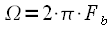
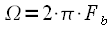
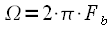

Частотно-манипулированные
FSK сигналы одни из самых распространенных
в современной цифровой связи. Это обусловлено прежде всего простотой
их генерирования и приема, ввиду нечувствительности к начальной фазе.
В данной статье мы рассмотрим принцип формирования и параметры FSK
модуляции и одной из ее модификаций — CPFSK (FSK
с непрерывной фазой). В
русскоязычной литературе также встречается аббревиатура «ЧМн»
для обозначения частотно-манипулированных сигналов.
FSK модуляция. Индекс FSK модуляции
Для начала рассмотрим
двоичную FSK модуляцию, когда исходный
модулирующий сигнал
представляет собой двоичную бинарную последовательность нулей и
единиц следующую с битовой скоростью
.
Формирователь FSK сигнала и принцип
его функционирования можно условно представить, как это показано на
рисунке 1.
Рисунок 1: Принцип формирования FSK сигнала
На рисунке 1 показано два
генератора, формирующие колебания
и
на различных частотах (смотри поясняющие осциллограммы рисунка 1).
Также имеется электронный ключ, управляемый цифровым сигналом
,
таким образом, что при передаче логической «1»
на выход подается сигнал
,
а при передаче логического «0» - сигнал
.
Таким образом, частота выходного сигнала «манипулируется»
в зависимости от битовой последовательности. Не смотря на простоту
приведенной схемы, она на практике не применяется, поскольку
требуется очень быстродействующий ключ с минимальным переходным
процессом, а также при произвольной начальной фазе генераторов
возможны скачки по фазе при смене символа, что в свою очередь
приводит к расширению спектра. На практике получила распространение
FSK модуляция с непрерывной фазой CPFSK.
Рассмотрим данный вид модуляции более подробно. FSK
сигналы являются частным случаем сигналов с частотной
модуляцией ( FM ) при модулирующем сигнале в
виде двоичной битовой последовательности
.
Таким образом, для модуляции FSK можно
использовать схему FM модулятора на базе
универсального квадратурного модулятора, как это показано на рисунке
2.
Рисунок 2: Структурная схема формирования FSK сигнала на базе FM модулятора
Поясняющие графики работы
приведенной на рисунке 2 структурной схемы показаны на рисунке 3.
Рисунок 3: Поясняющие графики работы FSK модулятора
На верхнем графике
показана исходная битовая последовательность
следующая со скоростью
бод, т.е. длительность одного бита последовательности
.
Блок нормировки формирует сигнал
с уровнем
и
с нулевым средним, как это показано на среднем графике рисунка 3, при
этом форма сигнала сохраняется. Далее
используется как модулирующий сигнал на входе FM
модулятора. Первым блоком FM модулятора
стоит интегратор, который интегрирует сигнал
в результате получается сигнал
в виде «пилы» как это показано на нижнем графике рисунка
3. Необходимо отметить, что при интегрировании импульс единичной
амплитуды на выходе интегратора будет иметь амплитуду
После сигнал на выходе интегратора
усиливается в
раз, где
— частота девиации FM сигнала. При
рассмотрении FM сигналов говорилось, что
частота девиации задает полосу сигнала на выходе модулятора. При
цифровой модуляции частота девиации задает разнос частот манипуляции.
Представим
в виде произведения:
(1)
где
носит название индекса FSK модуляции и
определяет во сколько раз разнос частот манипуляции превышает битовую
скорость,

— циклическая частота модулирующего сигнала,
— частота повторения бита при чередовании нулей и единиц в
цифровом сигнале (в 2 раза ниже скорости передачи информации
). После усиления и задания девиации частоты производится формирование
квадратурных компонент
и
и модуляция при помощи универсального квадратурного модулятора.
Сделаем замечание. Смысл
сигнала на выходе интегратора ни что иное как мгновенная фаза FSK
сигнала. Поскольку на выходе интегратора фаза не имеет
разрывов, то формируемый таким образом FSK сигнал
называется FSK сигнал с непрерывной фазой
или CPFSK. Также в некоторой литературе
такой способ модуляции носит название модуляция с памятью, так как
интегратор «помнит» значения полученные ранее, в то время
как ключ на рисунке 1 « не помнит »
свое положение в предыдущие моменты времени (модулятор на
рисунке 1 носит название модулятор без памяти).
Cпектр FSK сигнала
Рассмотрим спектр FSK
сигнала . Ранее уже говорилось, что
спектр сигналов с угловой модуляцией в общем случае не выражается
аналитически. Однако в случае с бинарной последовательностью, можно
получить оценку спектра FSK сигналов следуя
следующим рассуждениям. Представим сигнал
на входе FM модулятора в виде суммы двух
сигналов:
(2)
где
(3)
Такое представление
графически показано на рисунке 4.
Рисунок 4: Представление модулирующего сигнала
Тогда FSK
сигнал можно представить в виде суммы сигналов
и
:
(4)
Графически это показано на
рисунке 5.
Рисунок 5: Представление FSK сигнала
Таким образом, спектр FSK
сигнала
есть сумма спектров
сигналов
и
.
Но согласно (4)
и
— перенесенные на соответствующие частоты сигналы
и
,
которые в свою очередь представляют собой последовательность
импульсов длительности
Поскольку битовая последовательность случайная, то спектральная
плотности
и
сигналов
и
может
быть представлена, как это показано на рисунке 6.
Рисунок 6: спектральная плотность случайного битового потока
Тогда спектры
и
сигналов
и
,
а также результирующий спектр FSK сигнала
представлены рисунке 7.
Рисунок 7: Спектр FSK сигнала
Таким образом, мы получили
спектр FSK сигнала. Видно, что составляющие
FSK сигнала разнесены на частоту девиации,
а согласно (1), частота девиации зависит от битовой скорости
и
индекса модуляции
.
При фиксированной битовой скорости составляющие спектра FSK
сигнала будут тем ближе, чем меньше индекс FSK
модуляции. На рисунке 8 показаны спектры FSK
сигнала при различном индексе модуляции.
Рисунок 8: Спектры FSK сигнала при различном индексе модуляции
Из рисунка 8 следует, что
при уменьшении индекса FSK модуляции
составляющие FSK сигнала сдвигаются и при
основные лепестки соприкасаются, а при
перекрываются на половину. Таким образом, индекс модуляции задает
положение составляющих FSK вне зависимости
от несущей частоты и битовой скорости модулирующего сигнала.
На рисунке представлен
спектр FSK и основные частотные
соотношения.
Рисунок 9: Основные частотные соотношения в спектре FSK
Параметр
задает количество боковых лепестков между составляющими спектра.
Частотная манипуляция без разрыва фазы (CPFSK)
При передаче информации,
как правило, существуют ограничения на ширину спектра сигнала, поэтому
на практике используют схему модуляции CPFSK без
разрывов фазы и при малых значениях индекса модуляции
.
Спектр CPFSK сигнала при
и
показан на рисунке 10 синим цветом (красным показан спектр FSK
с разрывом фазы).
Рисунок 10: Спектр CPFSK сигнала при различных индексах модуляции
Из рисунка 10 хорошо
видно, что отсутствие разрывов фазы приводит к существенному снижению
максимального бокового лепестка на 6..8 дБ, а также скорость убывания
боковых лепестков возрастает. Таким образом, формирование CPFSK
сигнала на основе универсального квадратурного модулятора
(рисунок 2) гораздо предпочтительнее, чем на основе ключа.
Векторная диаграмма CPFSK сигнала
Рассмотрим теперь
векторную диаграмму CPFSK сигнала. Для
этого вспомним, что CPFSK сигнал является
частным случаем FM сигнала при цифровом
входном сигнале, поэтому его векторная диаграмма не отличается от
векторной диаграммы FM сигнала. Однако при
рассмотрении FM сигнала было введено
понятие девиации фазы, т.е. фазового набега на одном периоде
модулирующего сигнала. Рассмотрим девиацию фазы
в случае CPFSK модуляции.
Из выражения (1) можно заметить, что
(5)
Для расчета набега фазы
рассмотрим рисунок 11.
Рисунок 11: Пояснения к расчету фазового набега
Исходный нормированный
цифровой сигнал
показан синим цветом, зеленым показан сигнал на выходе интегратора
,
а красным сигнал
,
умноженный на частоту девиации. Тогда набег фазы на одном
информационном символе можно рассчитать следующим образом:
(6)
Тогда с учетом (5)
а с учетом (1)
и окончательно можно записать:
(7)
Таким образом, получили,
что набег фазы зависит от индекса модуляции
и при
.
Необходимо сделать замечание. Под набегом фазы подразумевается
набег фазы на временном интервале
,
т.е. только на одном информационном символе. Если имеется
несколько информационных символов, то их суммарный набег зависит от
передаваемой информации и может принимать любое значение в интервале
от
до
с шагом
где
— количество передаваемых символов цифровой информации.
Рассмотрим это подробнее. Пусть имеется 3 бита цифровой информации
,
где
может принимать значения 0 или 1. Поведение вектора комплексной
огибающей на плоскости для CPFSK сигнала
можно представить как
(8)
Синфазная и квадратурная
компоненты получены согласно структурной схеме рисунка 2, а сигнал на
выходе интегратора
— ломаная линия как показано на рисунках 3 и 11.
Необходимо заметить, что
— ничто иное как фаза комплексной огибающей согласно (8),
линейно нарастает или убывает со скоростью
радиан на символ цифровой информации и при смене символа меняется
направление движения фазы комплексной огибающей , тогда при различных
комбинациях битового потока
мы получим различные фазовые траектории, как показано на рисунке 12
для двух из восьми значений трех бит информации при
.
Рисунок 12: Различные фазовые траектории
Аналогично можно построить
для всех восьми комбинаций
.
Если все возможные фазовые траектории свести в одну диаграмму
то получится диаграмма представленная на рисунке 13.
Зеленым и черным показаны
траектории для
и
,
соответствующие рисунку 12.
Рисунок 13: Полная фазовая диаграмма для 3-х бит информации
Выводы
Таким
образом мы рассмотрели FSK и
CPFSK сигналы,
привели структурную схему FSK модулятора
на основе управляемого ключа, а также схему формирования CPFSK
на основе универсального квадратурного
модулятора. Было показано, что спектр CPFSK
сигнала обладает меньшим уровнем боковых
лепестков по сравнению с FSK сигналом,
что обусловлено непрерывной фазой сигнала. Подробно был рассмотрен
вопрос связанный с влиянием индекса модуляции на фазу комплексной
огибающей CPFSK сигнала.
В следующих разделах мы рассмотрим широко распространенный частный
случай CPFSK модуляции
— MSK.
Любые вопросы и пожелания вы можете оставить в
гостевой книге, на форуме,
или прислать по электронной почте admin@dsplib.ru
 и
на различных частотах (смотри поясняющие осциллограммы рисунка 1).
Также имеется электронный ключ, управляемый цифровым сигналом
,
таким образом, что при передаче логической «1»
на выход подается сигнал
,
а при передаче логического «0» - сигнал
и
на различных частотах (смотри поясняющие осциллограммы рисунка 1).
Также имеется электронный ключ, управляемый цифровым сигналом
,
таким образом, что при передаче логической «1»
на выход подается сигнал
,
а при передаче логического «0» - сигнал

 бод, т.е. длительность одного бита последовательности
.
Блок нормировки формирует сигнал
с уровнем
и
с нулевым средним, как это показано на среднем графике рисунка 3, при
этом форма сигнала сохраняется. Далее
используется как модулирующий сигнал на входе FM
модулятора. Первым блоком FM модулятора
стоит интегратор, который интегрирует сигнал
в результате получается сигнал
бод, т.е. длительность одного бита последовательности
.
Блок нормировки формирует сигнал
с уровнем
и
с нулевым средним, как это показано на среднем графике рисунка 3, при
этом форма сигнала сохраняется. Далее
используется как модулирующий сигнал на входе FM
модулятора. Первым блоком FM модулятора
стоит интегратор, который интегрирует сигнал
в результате получается сигнал
 в виде «пилы» как это показано на нижнем графике рисунка
3. Необходимо отметить, что при интегрировании импульс единичной
амплитуды на выходе интегратора будет иметь амплитуду
в виде «пилы» как это показано на нижнем графике рисунка
3. Необходимо отметить, что при интегрировании импульс единичной
амплитуды на выходе интегратора будет иметь амплитуду
 После сигнал на выходе интегратора
После сигнал на выходе интегратора
 носит название индекса FSK модуляции и
определяет во сколько раз разнос частот манипуляции превышает битовую
скорость,

— циклическая частота модулирующего сигнала,
— частота повторения бита при чередовании нулей и единиц в
цифровом сигнале (в 2 раза ниже скорости передачи информации
). После усиления и задания девиации частоты производится формирование
квадратурных компонент
и
и модуляция при помощи универсального квадратурного модулятора.
носит название индекса FSK модуляции и
определяет во сколько раз разнос частот манипуляции превышает битовую
скорость,

— циклическая частота модулирующего сигнала,
— частота повторения бита при чередовании нулей и единиц в
цифровом сигнале (в 2 раза ниже скорости передачи информации
). После усиления и задания девиации частоты производится формирование
квадратурных компонент
и
и модуляция при помощи универсального квадратурного модулятора.
 :
: и
,
которые в свою очередь представляют собой последовательность
импульсов длительности
Поскольку битовая последовательность случайная, то спектральная
плотности
и
сигналов
и
,
которые в свою очередь представляют собой последовательность
импульсов длительности
Поскольку битовая последовательность случайная, то спектральная
плотности
и
сигналов
 перекрываются на половину. Таким образом, индекс модуляции задает
положение составляющих FSK вне зависимости
от несущей частоты и битовой скорости модулирующего сигнала.
перекрываются на половину. Таким образом, индекс модуляции задает
положение составляющих FSK вне зависимости
от несущей частоты и битовой скорости модулирующего сигнала. задает количество боковых лепестков между составляющими спектра.
задает количество боковых лепестков между составляющими спектра. .
Спектр CPFSK сигнала при
.
Спектр CPFSK сигнала при
 и
показан на рисунке 10 синим цветом (красным показан спектр FSK
с разрывом фазы).
и
показан на рисунке 10 синим цветом (красным показан спектр FSK
с разрывом фазы). показан синим цветом, зеленым показан сигнал на выходе интегратора
,
а красным сигнал
,
умноженный на частоту девиации. Тогда набег фазы на одном
информационном символе можно рассчитать следующим образом:
показан синим цветом, зеленым показан сигнал на выходе интегратора
,
а красным сигнал
,
умноженный на частоту девиации. Тогда набег фазы на одном
информационном символе можно рассчитать следующим образом: ,
где
,
где
 может принимать значения 0 или 1. Поведение
может принимать значения 0 или 1. Поведение